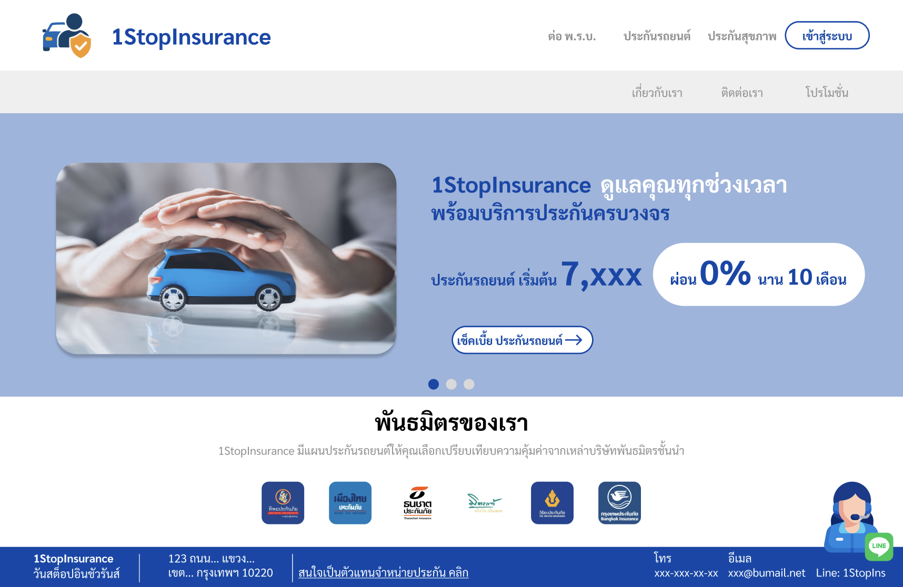
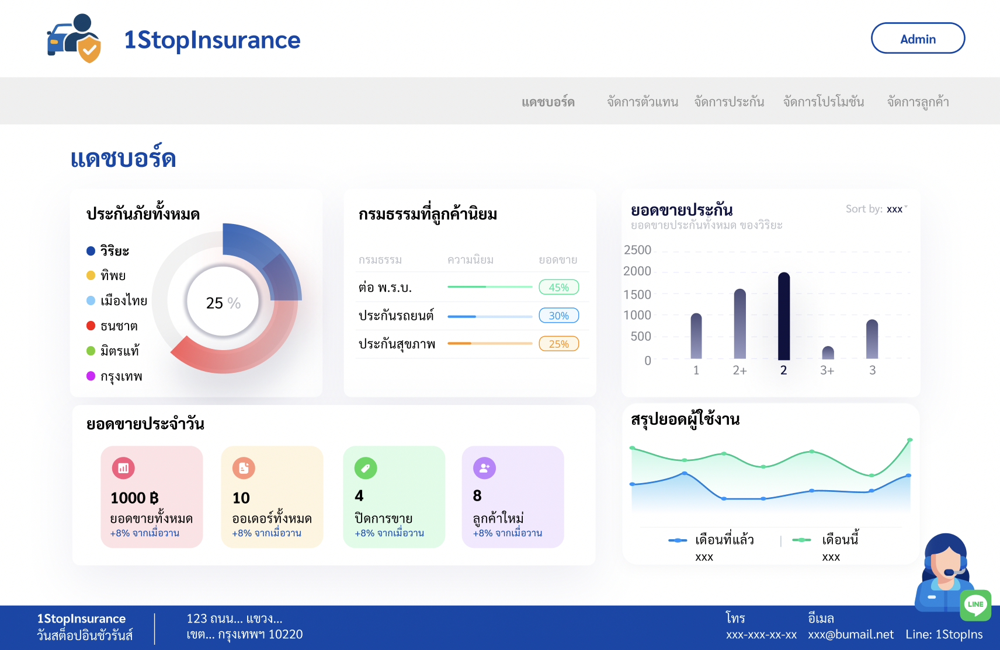

1stopInsurance — Insurance Web Platform
A responsive web platform that connects customers with insurance agents and helps simplify the insurance process.


Computer Science Student • UX&UI Designer
Hi! I’m Romchat Kalbermatten, a final year Computer Science student at Bangkok University. I enjoy creating simple tech solutions that help people. Over the past few years, I’ve worked on different projects like a café ordering app in Java, a calendar task planner, and a website that connects insurance agents with customers. These projects gave me hands-on experience with both coding and UI/UX design, and helped me understand how to turn ideas into real, usable tools. I’ve also lived in Switzerland for 10 years, where I completed a vocational training program and worked for a year before moving back to Thailand to continue my studies. Since starting university, I’ve been working part-time alongside my studies. Balancing work and school has taught me how to manage my time, take responsibility, and stay focused on my goals. I speak German, Thai, and English fluently, and I enjoy working with people from different cultures and backgrounds. Right now, I’m looking for an internship where I can keep learning, build real-world skills, and be part of a supportive team.
A responsive web platform that connects customers with insurance agents and helps simplify the insurance process.
A calendar application designed to help users manage their daily activities and tasks.
An application built with Java to simulate a café ordering system.
Education Journey
I was born and raised in Thailand, where I completed my primary education. I then moved to Switzerland, where I spent nearly a decade studying and working, including completing a vocational program in Geomatics. In 2021, I returned to Thailand to pursue my bachelor's degree in Computer Science at Bangkok University.
B.Sc. in Computer Science
Bangkok University • 2022–Present
GPA: 3.63 / 4.00
Geomatiker (Geomatics Technician)
BBZ Zurich, Switzerland • 2016–2020

I’m a friendly and adaptable person who enjoys working with people. I have diverse work experience and strong communication, teamwork, and time management skills. I’m now looking to apply my creativity and technical knowledge to UX/UI design roles, creating intuitive and user-friendly experiences.
Completed vocational training as a Geomatiker at BBZ Zurich and worked for one year at Rudaz + Partner in Switzerland. Gained hands-on experience in technical problem-solving, data management, and precision work.
Worked part-time while studying, providing excellent customer service, collaborating with team members, and managing multiple tasks efficiently. This role enhanced my communication, adaptability, and teamwork skills.
Open to internship or entry-level opportunities in Web Development, UX/UI, or Data Visualization.